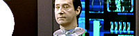

| Acervo
Laços
de família
 Conheça
mais sobre os Soong, uma turma cibernética
que é uma família e tanto! Metamorfose
ambulante
Saiba
aqui se a sada de Patrick Steward realmente
prejudicar a franquia. Coraes
solitrios no Cosmos
Saiba
aqui por que nunca foram desenvolvidos os romances
na srie. Acordes
perdidos
Descubra
por que A Nova Gerao tem trilhas to pouco marcantes, aqui. Um
ilustre convidado
Saiba
como Stephen Hawking foi parar em Jornada nas Estrelas clicando aqui. Reviravoltas
do incio ao fim
Leia
aqui uma anlise completa sobre a sexta temporada
da srie. Picard
enfrenta o Dominion... em livro
Conhea
as obras que mostraram o papel da Enterprise-E na guerra aqui. Jornadas
literrias
difcil escrever um livro baseado em Jornada. Saiba o que preciso aqui.
Viagens
no tempo e no espao, Parte II
A
segunda parte da anlise dos episdios da srie com viagem no tempo, aqui.
Viagens
no tempo e no espao, Parte I
Leia
uma anlise de todos os episdios que tiveram viagens no tempo, clicando aqui.
|